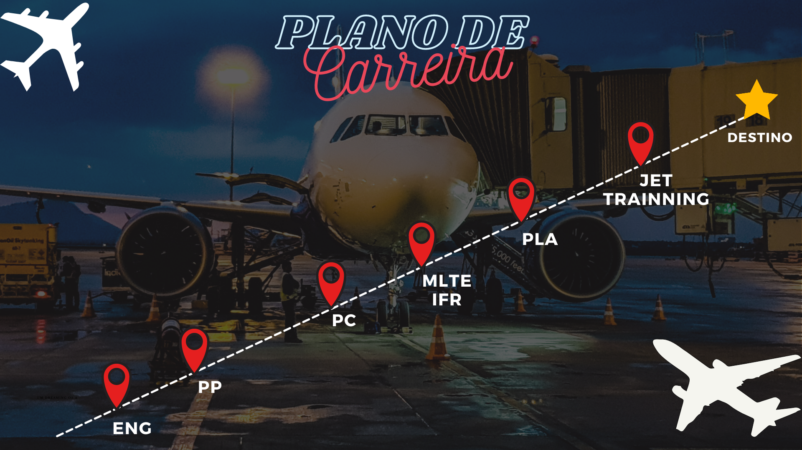

Sobre mim
Estudante de SIS & Piloto em treinamento
Aos meus 17 anos, no auge da fase pré termino de ensino médio, onde se faz necessário questionar decisões futuras, escolher uma profissão não foi tão simples para mim. O foco é que durante o processo de escolha, fazer qualquer curso tradicional não parecia ser suficiente para a minha vida, queria mais. Durante um processo de imersão descobri a aviação, e meu primeiro contato, foi através de vídeos sobre a profissão de Comissária de Bordo, mas não demorou até que eu me apaixonasse pela pilotagem
Me lembro que logo no início da procura por materiais do assunto, descobri o quanto era escasso encontrar coisas relacionadas a mulheres e a pilotagem, e do pouco que encontrei, sempre reforçava as dificuldades, preconceitos e principalmente o desafio de conseguir uma oportunidade de trabalho e juntar todo dinheiro necessário para realizar o curso.
Após muitos obstáculos, resolvi lutar por este sonho, e fiz minha primeira tatuagem para nunca esquecer de como foi todo este processo, e principalmente, para nunca desistir. Não tomei a decisão sem muito refletir sobre antes, e me atentei em faze-la em um local que não ficaria exposto em um uniforme de piloto, visto que apesar das companhias estarem evoluindo, ter
• A aviação é um mercado muito instável, e se faz necessário ter um plano B de carreira, para o
sustento da vida, caso o cenário seja de crise.
• Minha família não poderia arcar com todos os custos da minha formação como piloto, então
eu mesma precisaria arcar com estes processos.
Durante todo este processo, eu ainda pensava em fazer Engenharia, e estava o tempo todo estudando para ser aprovada em uma universidade. Reunindo todos os meus objetivos, criei um plano de carreira, que envolvia todos os passos que precisaria dar, desde a faculdade até a linha aérea, que na época era meu objetivo final, e colei na parede do meu quarto para me motivar todos os dias.
O caminho desde então não seguiu exatamente este plano, na verdade, como havia previsto foram necessárias várias mudanças de rota. No final daquele ano 2021, eu recebi as aprovações que queria, e escolhi entre as minhas três aprovações, cursar Engenharia de produção na Universidade estadual Paulista, que ocorreu justamente porque na cidade onde ficava o Campus da faculdade, Guaratinguetá, havia um aeroclube onde eu poderia ao decorrer dos anos que passaria lá, realizar minhas aulas práticas do curso de pilotagem. Foi tudo muito planejado, como uma característica típica da minha personalidade, e estava satisfeita, então comecei a faculdade enquanto fazia minha aulas teóricas do curso de piloto privado. Alguns meses depois, após estar insatisfeita com a faculdade e o curso que havia escolhido, decidi voltar para a área de TI, que também havia me apaixonado durante esta faculdade. Resolvi tentar ingressar na SPtech porque confiava muito na proposta de revolução do ensino superior. E uma chave mudou em minha mente, quando finalmente encontrei duas áreas incríveis que eu amava, a aviação e a tecnologia... são mundos diferentes, e conciliar os dois pode ser um desafio. A partir daí decidi que seria profissional de TI enquanto estivesse feliz e satisfeita nesta área, já que assim como tudo na vida, nunca somos, apenas estamos.
Posso estar pilota de avião em um dia, mas não significa que vou fazer o mesmo por toda a vida, assim como TI ou qualquer área de conhecimento. Atualmente, ainda tento conciliar a aviação com a minha vida profissional, e apesar de não me ver mais levando isto como ocupação principal, nada me impede de levar como um hobby, afinal, já imaginou uma analista de sistemas que voa como hobby em seu tempo livre?